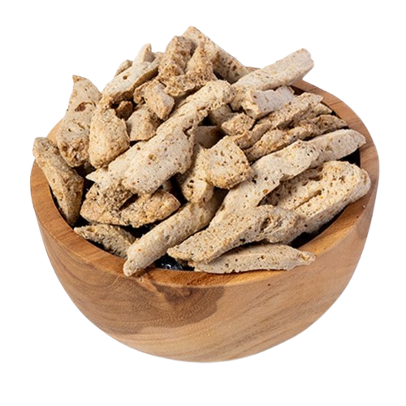
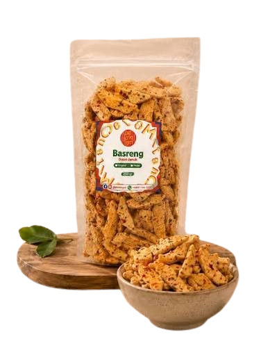

Basreng Original
Rasa gurih yang sederhana untuk pencinta camilan klasik.
Tanya ProdukSaatnya ngemil dengan sensasi kriuk yang menggoda! Basreng Kriuk Bandung hadir dengan cita rasa gurih dan pilihan pedas untuk menemani setiap momenmu.
Camilan renyah untuk teman santai.
Pilih rasa sesuai selera kamu.
Teman kumpul bersama orang terdekat.
Pilih varian Basreng Kriuk Bandung yang cocok untuk menemani aktivitasmu.

Rasa gurih yang sederhana untuk pencinta camilan klasik.
Tanya ProdukSensasi pedas yang cocok untuk menemani waktu santaimu.
Tanya Produk
Cita rasa gurih dengan aroma daun jeruk yang khas.
Tanya ProdukBasreng Kriuk Bandung menghadirkan camilan dengan sensasi renyah dan pilihan rasa untuk menemani berbagai suasana.
Nikmati camilan saat belajar, bekerja, bersantai, atau berkumpul bersama orang terdekat.
Ingin mencoba Basreng Kriuk Bandung? Hubungi kami untuk menanyakan varian rasa, harga, dan cara pemesanan.
Pesan via WhatsApp